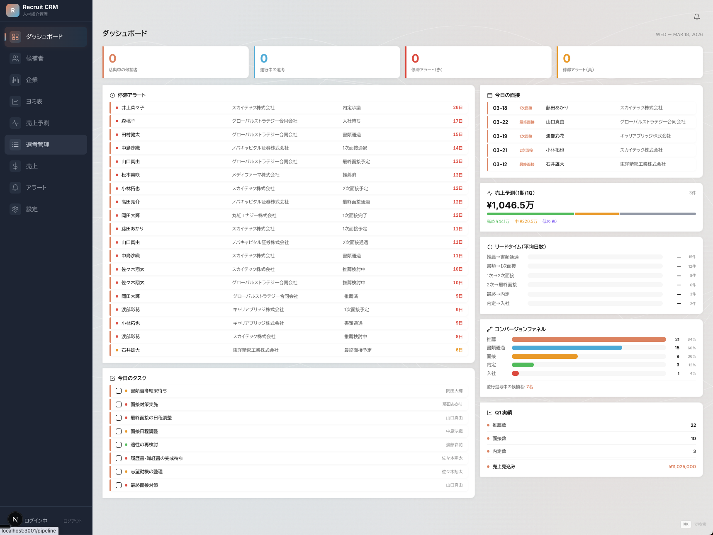
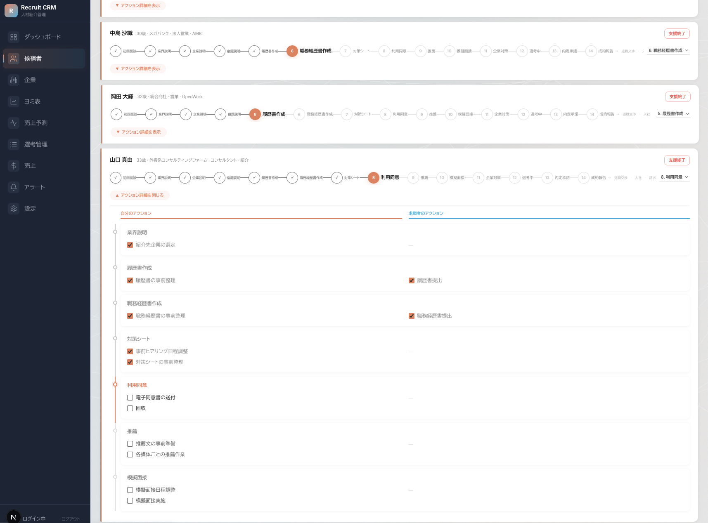
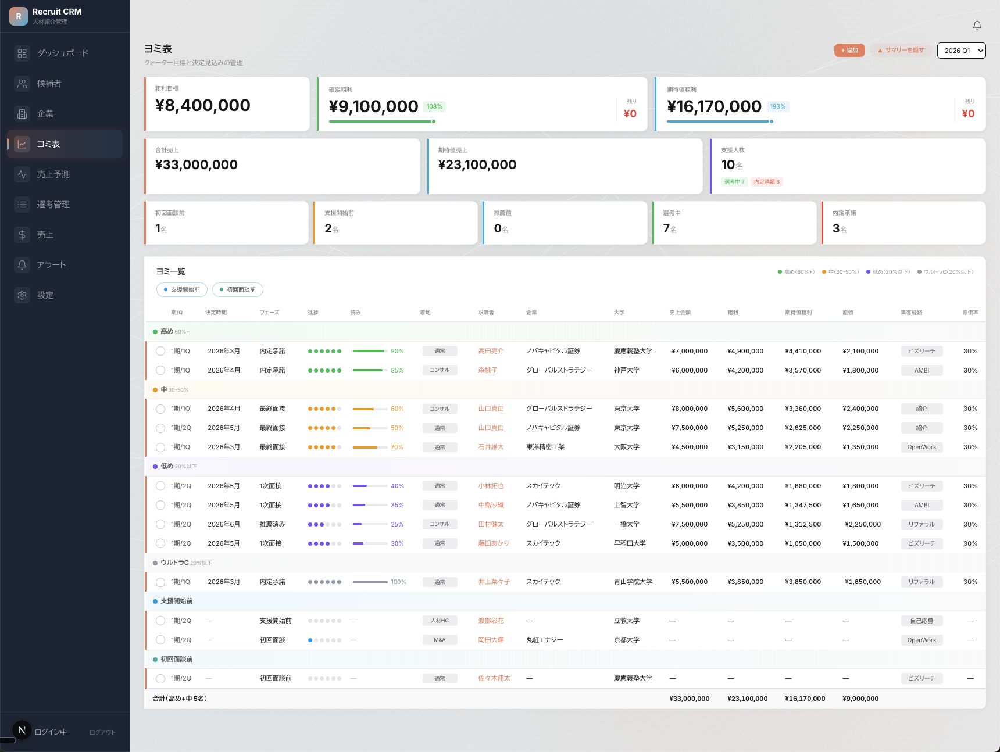
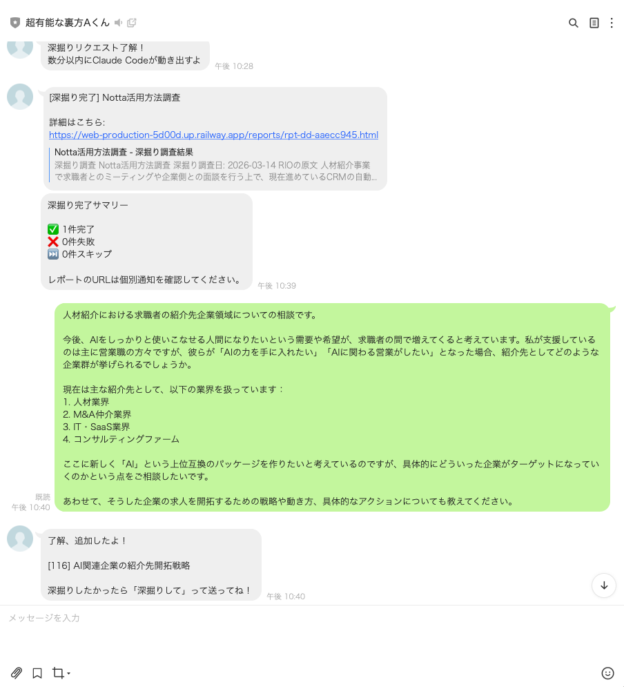
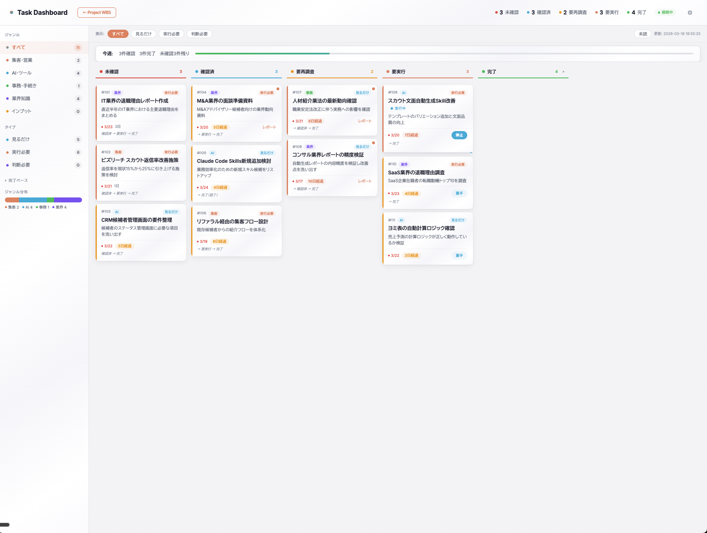
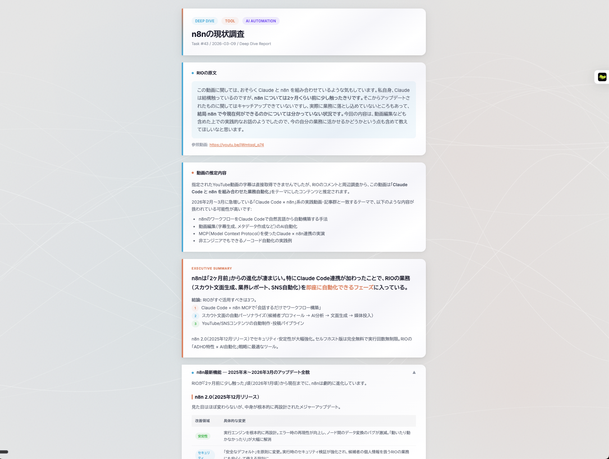
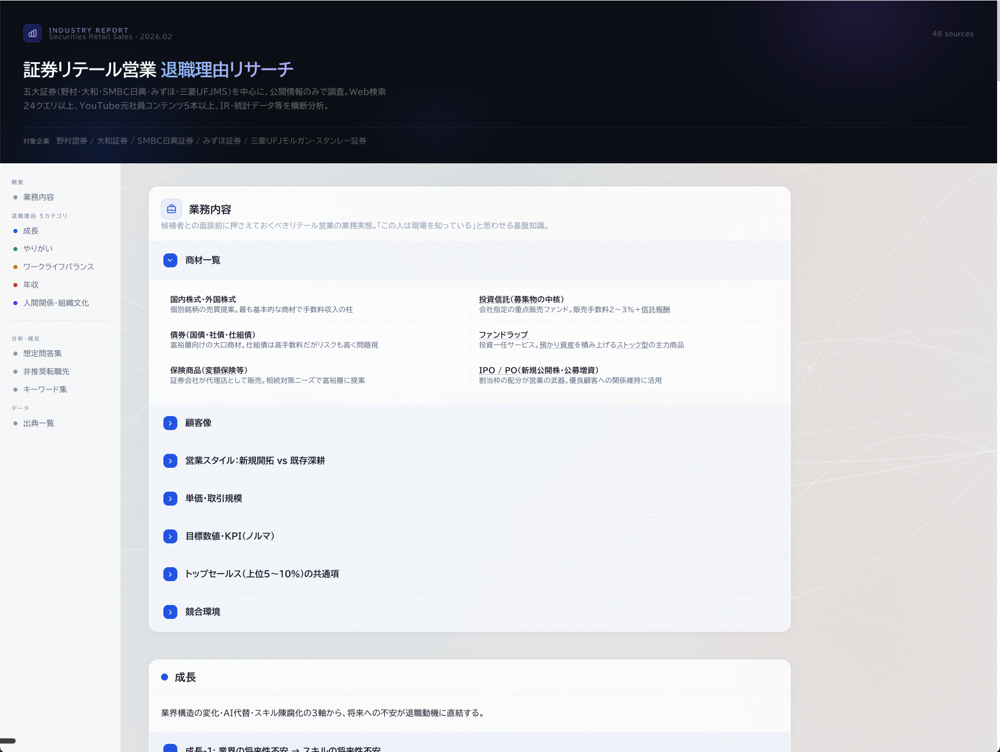
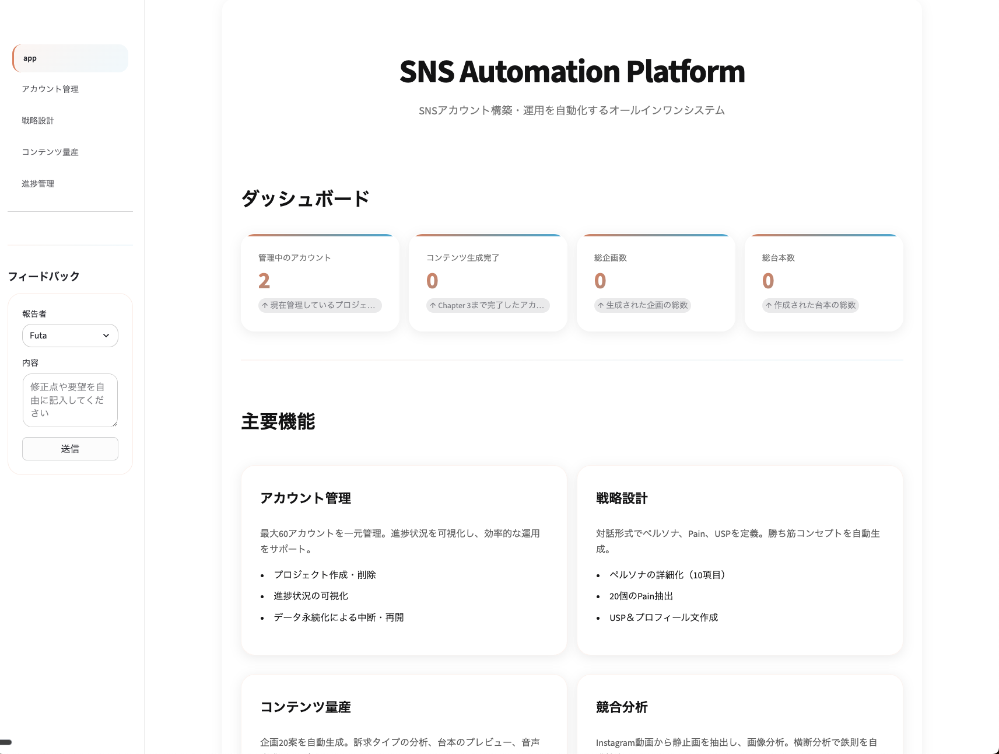
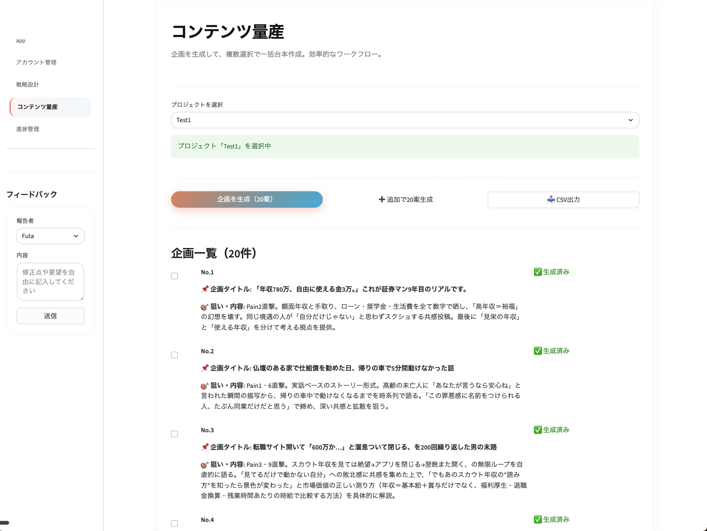
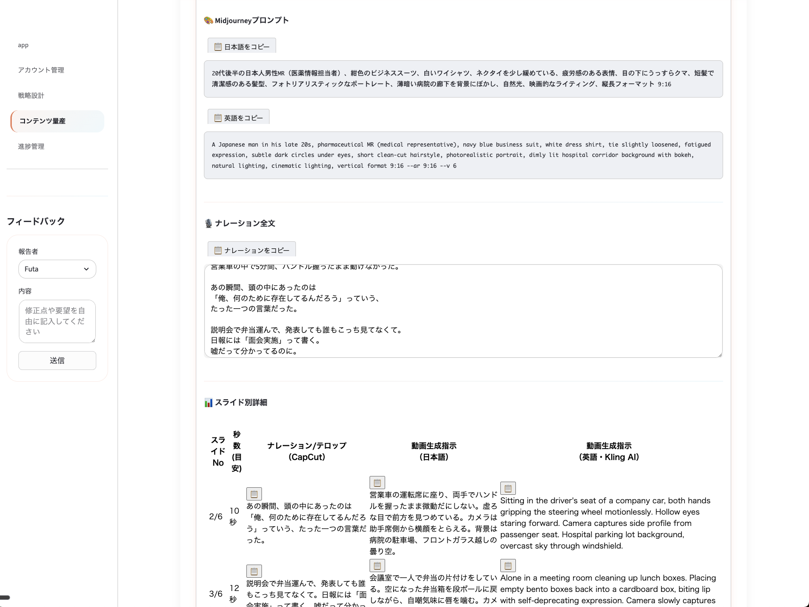

1
経歴
京セラ → リクルート → 人材紹介会社 共同創業・副代表 → 現在（人材紹介会社 代表）
各社の実績・転職理由を含む詳細タイムライン
OPEN
各社の実績・転職理由を含む詳細タイムライン
01
京セラ株式会社（2016年4月〜2018年4月）
海外営業 / ファインセラミックス事業部 / 北米市場担当
半導体製造装置用部品の海外営業。世界No.1の半導体製造装置メーカー（Applied Materials）を担当。北米市場向けの納期調整・品質トラブルの改善を統括。
転職理由
自分が供給した部品が製造装置になり、半導体チップが生まれ、AIが進化する。その構造を目の当たりにし「自分が頑張るほど、自分の仕事がAIに代替される」と実感。海外営業のスキルだけではAI時代に生き残れないと判断し、ビジネスの本質を学ぶためにリクルートへ。
02
株式会社リクルート（2018年7月〜2019年4月 / 約1年9ヶ月）
リクルーティングアドバイザー（RA） / コンシューマーサービス事業部 / 中小企業向け法人営業
toC向けサービスを展開する中小企業の経営者・役員・人事責任者に対し、採用課題のヒアリングからソリューション提案までを担当。法人向けコンサルティング営業の基礎を徹底的に鍛える。
入社わずか1年で、80人中2番目の売上目標を担当
当時在籍部署内で最短のグレードアップ
MVP・表彰を複数回受賞
転職理由
在籍1年ほどで前職の代表からアプローチを受け、副業から共同創業へ。「年功序列で安定」を手放してでも、ゼロから事業を作る挑戦を選んだ。
03
株式会社Will Location（2019年9月〜2025年11月 / 6年間）
共同創業・取締役副代表
コロナ禍でゼロから事業を立ち上げ、11名体制まで成長。以下の業務を横断的に経験:
1. キャリアアドバイザー（トップセールス）
20代営業職を中心に、成長産業（M&A仲介・IT SaaS・人材・コンサルファーム・Webマーケ）への転職支援。個人としても業界トップクラスの実績
20代営業職を中心に、成長産業（M&A仲介・IT SaaS・人材・コンサルファーム・Webマーケ）への転職支援。個人としても業界トップクラスの実績
2. オペレーション構築・改善
業務全体における事業インパクトが大きいポイントの課題を特定し改善
業務全体における事業インパクトが大きいポイントの課題を特定し改善
3. マネジメント
メンバーの課題を特定し改善を繰り返し、社内平均年収2,200万円超の組織を実現。人の心を動かし、高い目標を達成し続けるチームを構築
メンバーの課題を特定し改善を繰り返し、社内平均年収2,200万円超の組織を実現。人の心を動かし、高い目標を達成し続けるチームを構築
4. 採用
キーエンス メイン部署全国1位、MR 800人中1位、大和証券 社長賞、キリン、トヨタなど日本を代表する企業やトップセールスの採用を実現。エージェント向け自社説明会の企画・実施、採用ボトルネックの特定と改善
キーエンス メイン部署全国1位、MR 800人中1位、大和証券 社長賞、キリン、トヨタなど日本を代表する企業やトップセールスの採用を実現。エージェント向け自社説明会の企画・実施、採用ボトルネックの特定と改善
5. バックオフィス
請求書発行業務等の管理業務も担当
請求書発行業務等の管理業務も担当
6期にわたり事業を牽引
売上 約5.5-6億円 / 営業利益 1.4億円
社内平均年収 2,200万円超
人気企業における支援実績がトップ水準の企業多数
M&A Capital Partners（年収ランキング全国1位企業）— 全国の全エージェントの中でNo.1の支援実績（2024年度）
退任理由
AI時代において、ソロプレナーとして機動力を持ちつつ自分がやりたいことに全力で取り組める環境に身を置きたいと考えたため。自身が保有していた株式を売却し、金銭的余裕を得た状態で次のフェーズにチャレンジ。前職との関係は良好で、競業避止等もありません。
04
株式会社Encore Partners（2025年12月〜 / 現在）
代表取締役
人材紹介業を経営。2026年4月に人材紹介免許を取得予定（申請中）。対象の求職者・企業は前職同様、20代営業職 x 成長産業。2026年7月に1名入社予定。
免許取得に向けた準備期間中、Claude Code（Maxプラン $200/月 自費契約）で業務オペレーション全体を再構築中。毎日17時から深夜1時まで没頭し、1時を過ぎても「まだやりたい」のに泣く泣くオフィスを出る日々。Claude Codeを使い始めてからは、他のAIツールはほとんど使わなくなった。
2
なぜこのポジションに応募するのか
ここに辿り着くまでの経緯 — なぜClaude Codeコンサルで、なぜデジライズなのか
原動力 → Claude Codeへの衝撃 → 「届けたい」→ デジライズとの出会い
OPEN
原動力 → Claude Codeへの衝撃 → 「届けたい」→ デジライズとの出会い
原動力
私が幸せを感じるのは、興味ある領域に没頭し、成長し、それを誰かに教えている時です。退屈が一番嫌い。この原動力が、全ての出発点です。
Claude Codeとの出会い
2026年2月、Claude Codeに出会いました。1ヶ月間没頭して確信したのは、これは「便利なAIツール」ではないということ。CLAUDE.mdとSkillsの設計次第で、非エンジニアでも業務を丸ごと再構築できる。実際に自分の事業で27機能のCRM設計、12業界分のレポート自動生成、LINE AIタスク管理を1.5ヶ月で立ち上げました。毎日17時から深夜1時まで没頭し、1時を過ぎても「まだやりたい」のに泣く泣くオフィスを出る日々です。
届けたい
Claude Codeを使っている人と使っていない人で、仕事のスピードがあまりにも違う。自分だけうまくいっている状態が、正直気持ち悪い。これを自分だけで使っているのはもったいない。誰かに届けたい。
デジライズとの出会い
Xでチャエン様の発信に出会いました。日本のAI普及を本気で推進している方だと感じました。求人を見つけた瞬間、「これは自分がやるべきだ」と直感しました。デジライズの看板で動けば、一人では届かないクライアントにアプローチできる。案件の数が増えれば、コンサルとしての経験値も速く積める。自分の業界知見 x Claude Code実践力 x チャエン様の影響力。この掛け算は、ここでしか実現できません。クライアントへのAI導入は、結局誰かがやります。その時に「あの時やっていれば」と後悔する未来が一番嫌です。誰かがやるなら、自分が最初にやる。
興味で動く人間の実例
顧問オファー
前職を退任後、3社の人材紹介会社から顧問オファーをいただきましたが、全てお断りしています。興味がなかったから。
無償サポート
小学校の友人の奥さんが事業立ち上げで困っていると聞いた時は、何回も打ち合わせを重ね、深夜1時、2時まで無償で法的リスクの洗い出しから弁護士相談前の論点整理までサポートしました。Claude Codeの実践の場として魅力的で、興味が湧いたから。
スターターキット
AIに詳しくなりたいという知人にはClaude Codeのスターターキットを自作して展開しています。Claude Codeは今、その興味の対象ど真ん中にあります。
スターターキットを見る
3
求人要件との適合度
必須要件 — 全て充足
Claude Code実務、Maxプラン契約、法人コンサル経験、研修経験、開発経験、東京対面
OPEN
Claude Code実務、Maxプラン契約、法人コンサル経験、研修経験、開発経験、東京対面
歓迎要件 — 7項目中5項目該当、1項目一部実装、1項目未実施
Claude API、RAG/エージェント、DX推進、Python/TS、スタートアップ、AI情報発信、複数AIツール
OPEN
Claude API、RAG/エージェント、DX推進、Python/TS、スタートアップ、AI情報発信、複数AIツール
求める人物像 — 7項目全て該当
毎日使い倒す、Claude Code集団、技術×ビジネス、対面・壁打ち、キャッチアップ、知的好奇心、ビジョン共感
OPEN
毎日使い倒す、Claude Code集団、技術×ビジネス、対面・壁打ち、キャッチアップ、知的好奇心、ビジョン共感
4
入社後に持ち込める価値 — 6つのスキルセット
Claude Code導入コンサルタントに必要な6つの力を、実務経験の中で全て積み上げてきました
特定の1つが突出しているのではなく、6つが掛け合わさることで「クライアントの業務課題を見つけ、Claude Codeで解決し、組織に定着させる」一気通貫の価値を提供できます。
6つのスキルセット
各スキルをクリックすると詳細が開きます
OPEN
各スキルをクリックすると詳細が開きます
1. Claude Code実践力
1日7時間以上、1.5ヶ月間毎日使い倒す。Skills 16種類、CLAUDE.md 2層設計、複数プロダクト構築済み
OPEN
1日7時間以上、1.5ヶ月間毎日使い倒す。Skills 16種類、CLAUDE.md 2層設計、複数プロダクト構築済み
- Skills 16種類を自作・運用
企業調査、業界レポート生成、退職理由リサーチ、X検索、YouTube字幕抽出、コピーライティングなど、業務に直結するスキルを設計 - CLAUDE.md 2層設計
セキュリティの多層防御（予防→検知→遮断）、セッション継続のHANDOVER機構、非エンジニア向けUXルールを自ら設計 - MCP連携・Hooks設計
Notion連携、外部スキルの安全インストール機構、コンテキスト保護の自動リマインドなど、安全かつ実用的な環境を構築 - 複数のプロダクトを構築済み
CRM 27機能、業界レポート12業界、LINEタスク管理システムなど。全て「提案」ではなく「実物」
2. 業界・業務理解力
人材紹介業界9-10年。現場（CA）・マネジメント・経営の全レイヤーを経験
OPEN
人材紹介業界9-10年。現場（CA）・マネジメント・経営の全レイヤーを経験
- 人材紹介業界の「深さ」
外から見えない時間泥棒（スカウト、職務経歴書作成、面接対策資料、模擬面接）を知っている。初回面談での信頼獲得→意向獲得がCAの決定率と売上に直結し、ここが属人的になることが最大の課題だと体感で理解している - 12業界以上の「広さ」
各業界に在籍する求職者から業務内容を細かくヒアリングし、転職支援の対策を重ねてきた中で、業界ごとの業務プロセス・課題パターンを把握。業務を可視化してボトルネックを特定するアプローチはどの業界にも応用可能
3. 法人コンサルティング力
課題特定→提案の型。経営者・役員クラスとの折衝経験。業務課題とClaude Codeをつなぐ翻訳力
OPEN
課題特定→提案の型。経営者・役員クラスとの折衝経験。業務課題とClaude Codeをつなぐ翻訳力
- 思考の型
ゴール設定→現状整理→ギャップ特定→インパクト順に優先度付け→施策設計。経営時代に徹底的に鍛えられた - 経営者・役員クラスとの折衝経験
上場企業の役員、未上場企業の経営者との採用戦略MTG・会食の経験。採用課題の相談が直接入るレベルの信頼関係 - 課題をClaude Codeで解ける形に翻訳する力
「スカウト返信率が低い」→「パーソナライズ文面のSkills自動化」。業務課題と技術をつなぐ翻訳ができる
4. 研修・教育設計力
400-500名への1対1指導。相手のレベルに合わせたブレイクダウン。教えた2名がギネス記録更新中
OPEN
400-500名への1対1指導。相手のレベルに合わせたブレイクダウン。教えた2名がギネス記録更新中
- 相手のレベルに合わせたブレイクダウン
「理解していないことを理解していない」「理解していないと思われるのが恥ずかしくて聞けない」を前提に、徹底的に噛み砕く。重要ポイントは何度でも伝える - 教えた成果が数字で出ている
退職直前に指導した2名（2025年7月入社）が社内ギネス記録を更新中 - Claude Code指導で分かった「2つの壁」
①自動化する対象が目の前にない人（オーバースペック問題）②問いの精度がない人（ゴール↔現状のギャップを埋める質問が出てこない）。だからこそ、問いの設計力がある人間がコンサルとして入る必要がある
5. オペレーション・仕組み化力
11名組織をゼロから構築。属人的な業務を仕組みに変えてきた経験
OPEN
11名組織をゼロから構築。属人的な業務を仕組みに変えてきた経験
- 立ち上げの順番を知っている
まず自分がトップセールスになる→ノウハウを仕組み化→採用→展開。売上＝支援者数×決定率×単価に分解し、各変数を構造的に改善 - 仕組み化の判断基準が明確
最優先は「思考不要×繰り返し作業」、次に「思考必要だがAI代替可能×繰り返し作業」。闇雲に自動化しない - CRM 27機能の洗い出し方
全業務プロセスを細かく分解→各ステップで改善できることを洗い出し→Claude Codeに120個のアイデアを出させ→選定して研ぎ澄ます。クライアント先でもこの手法がそのまま使える
6. 導入して終わりにしない力
新しい仕組みを組織に定着させる。合意形成→定着の仕掛け→業務プロセス変革
OPEN
新しい仕組みを組織に定着させる。合意形成→定着の仕掛け→業務プロセス変革
- 合意形成の型
ゴール設定→双方で合意→合意した上で「なぜやらないのか」を問える土台を作る。一方的に押し付けない - 定着の仕掛け
使わせてフィードバックをもらう / ゲーム形式で競争と報酬 / エースに「周りを動かす」役割を渡して巻き込む - 「研修後に使われない」を防ぐ方法
経営者だけでなく現場と一緒に作る（上の自己満で終わらせない）。それでも使わない人には「使わざるを得ない業務プロセス」に変える
人材紹介が最も深い領域ですが、CAとして12業界以上に在籍していた求職者の業務プロセスを細かくヒアリングし対策してきた経験から、各業界における業務理解のスピードは一般と比較しても早いと考えています。「業務全体を可視化→インパクトが大きい自動化ポイントを特定」するアプローチは業界を問わず応用可能です。
5
構築したプロダクト
プログラミング経験ゼロ・Claude Code導入1.5ヶ月で、以下を全て構築しました。
※ スクリーンショット内の氏名・企業名・数値は全てダミーデータです。
人材紹介CRM — 全業務の自動化基盤
27機能設計 / Next.js + Supabase / コア機能実装済み・AI機能設計完了
OPEN
27機能設計 / Next.js + Supabase / コア機能実装済み・AI機能設計完了
構築中（コア機能実装済み）
人材紹介CRM — 全業務の自動化基盤
Next.js + Supabase + Radix UI + Recharts + @dnd-kit / Anthropic SDK連携
課題
- 候補者情報・選考進捗・売上予測・タスクがスプレッドシートに散在
- 管理コストが高く、対応漏れ・数値ミスが発生しやすい
- ヨミ（売上見込み）を手計算で管理しており、精度と速度に限界がある
解決
- 候補者管理・選考管理・ヨミ表・タスク管理を1つのCRMに集約。ツール間の行き来がゼロに
- ヨミ表がリアルタイムで期待値粗利を自動計算
- 選考管理はフェーズ別ビジュアルで停滞案件を即座に検知
スクリーンショットを見る



実装済み・設計確定
- ダッシュボード（停滞アラート・今日の面接・売上予測・コンバージョンファネル・Q実績）
- 選考管理（15ステップのフェーズ別ビジュアル / アクション詳細 / 停滞検知）
- ヨミ表（売上予測 / 22列 / 高め・中・低め・ウルトラCの4段階 / 期待値粗利自動計算）
- 候補者管理（プロフィール・経歴登録）
- 企業管理・求人管理
- DB設計 10テーブル + RLSセキュリティ
AI機能（設計完了 / 順次実装）
- スカウト文面のAI自動生成（媒体別最適化）
- 議事録の自動生成（Whisper + Claude）
- 職務経歴書のAIドラフト作成
- 推薦文のAI自動生成
- 面接練習のビデオ録画+AIフィードバック
- 選考日程の自動調整（Googleカレンダー連携）
- アラート・リマインダー自動化（13種類）
- 企業ごとの選考パターンDB化
- パイプライン売上予測
- 多媒体間の重複チェック
LINE簡単タスク管理システム — LINE AIタスク管理
稼働中 / FastAPI + LINE + Claude API / タスク漏れゼロ+自動調査
OPEN
稼働中 / FastAPI + LINE + Claude API / タスク漏れゼロ+自動調査
稼働中
LINE簡単タスク管理システム — LINE AIタスク管理
FastAPI + LINE Messaging API + Claude API + Google Tasks API / Railway
課題
- ADHD特性があり、カレンダーやタスクアプリを「開く行為自体」が続かない
- タスクを登録できても、調べ物が億劫で着手のハードルが高い
- AI・技術の最新情報（X等）を漏らさずキャッチし続けるのが難しい
解決
- LINEに話しかけるだけでタスク登録。AIが毎朝リマインドし、完了するまで追いかけるのでタスク漏れがゼロに
- 「deepdive」スキル連携で自動調査→HTMLレポート生成。事前知識がインプットされた状態でタスクに着手できる
- Xの最新情報もLINE経由で自動調査。そのHTMLをClaude Codeに渡して「実装すべきか否か」の判断まで即座に実行
SYSTEM FLOW
LINE
タスク投入
タスク投入
→
Task Dashboard
登録・管理
登録・管理
→
Claude Code
deepdive調査
deepdive調査
→
HTMLレポート
Railway配信
Railway配信
← レポートURLをLINEに自動通知
スクリーンショットを見る



業界レポート自動生成システム
12業界完成 / 1コマンドで退職理由・心理的背景・切り返しトークを自動生成
OPEN
12業界完成 / 1コマンドで退職理由・心理的背景・切り返しトークを自動生成
12業界完成
業界レポート自動生成システム
Claude Code Skill（industry-report-html）/ Web検索 + YouTube字幕取得
課題
- 業界知識のインプットは必須だが、1業界あたり膨大な時間がかかる
- 候補者の退職理由に対する仮説・インサイトの質がアドバイザー個人の経験に依存し、属人的
- 面談中にすぐ参照できる体系的な資料がなかった
解決
- 1コマンドで退職理由・心理的背景・切り返しトークを自動調査→ビジュアルHTMLレポートを生成
- 30-40件以上のWeb検索+YouTube字幕抽出で網羅的に情報収集。12業界分を量産済み
- 属人的だったインサイトを仕組み化。誰が使っても同じ精度のレポートが出る再現性を確保
- 面談中にチラ見できるので「この人は業界を分かっている」という信頼感の獲得が早まった
スクリーンショットを見る

SNSショート動画 台本自動生成システム
構築中 / Streamlit + Claude API / 戦略設計→台本→ナレーション→スライド演出→Midjourneyプロンプトまで一括生成
OPEN
構築中 / Streamlit + Claude API / 戦略設計→台本→ナレーション→スライド演出→Midjourneyプロンプトまで一括生成
構築中
SNSショート動画 台本自動生成システム
Streamlit + Claude API + Midjourney連携
課題
- ショート動画1本の制作に「構成→ナレーション→映像演出→画像生成プロンプト」と工程が多い
- 1本あたりの制作コストが高く、発信が止まりやすい
解決
- 戦略設計→企画→台本→映像演出→Midjourneyプロンプトまで一気通貫で自動生成
- 品質チェックで文字数・尺の超過を自動検知。フィードバック機能でチーム内レビューも完結
- 「企画を入れれば、撮影・編集に必要な素材が全て揃う」状態を実現
スクリーンショットを見る



6
稼働条件
開始時期
即日対応可能。ご相談次第で柔軟に調整します
稼働日数
オフィス出社も含め柔軟に対応可能です。詳細は面談でご相談させてください
雇用形態
業務委託を希望。報酬よりも機会を重視しています。条件面の詳細は面談でお話しできればと思います
兼業について
自身の人材紹介業（マイクロ法人）と並行。Claude Codeで業務を自動化済みのため、十分な稼働時間を確保可能
自分の業務を実験台にして、
Claude Codeでどこまでできるかを試し続けてきました。
この経験が御社の事業にどう活きるか、
直接お話しできる機会をいただけますと幸いです。